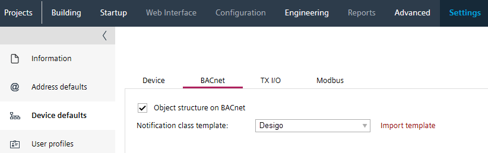

将自定义通知类导入到项目中
如果通知类模板适用于项目，则必须首先将修改后的模板导入到项目中。通知类模板也可以在稍后的时间点进行更改，但随后必须为所有设备进行后续分配。
在项目中，所有通知类必须具有相同的分配。这也适用于项目中集成的第三个设备。
Alarm management by notification class

有效的通知类模板必须在以下定义中具有唯一的条目：
- 通知类别编号
- 实例编号
- 零件名称
通知类
- Go to Settings.
- Open the Device defaults task.
- Select the BACnet tab.
- In the Notification class template section, click Import template.
C:\ProgramData\Siemens\Desigo\ABT\Libraries\HQ\NotificationClasses
or
C:\ProgramData\Siemens\Desigo\ABT\Libraries\RC\NotificationClasses. - Select the appreciate notification class template file.
- Click Open.
- The customized notification class file is imported but not assigned to any device.

- In an existing project, all devices must be loaded with this notification classes. This also applies to 3rd party devices that are integrated in the project.
Replace a notification class template of a device
如果导入新的通知类别，旧的自定义通知类别将从列表中删除，新的通知类别可供选择。